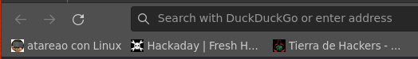
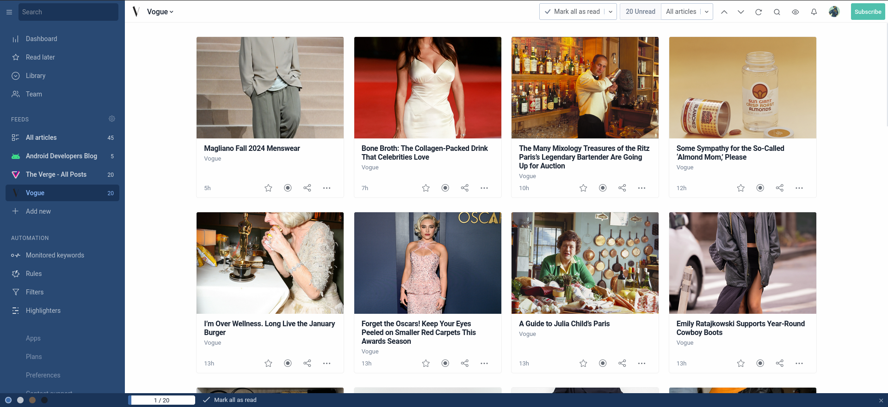
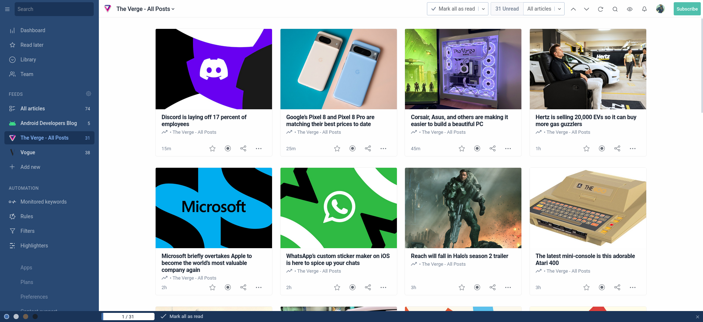
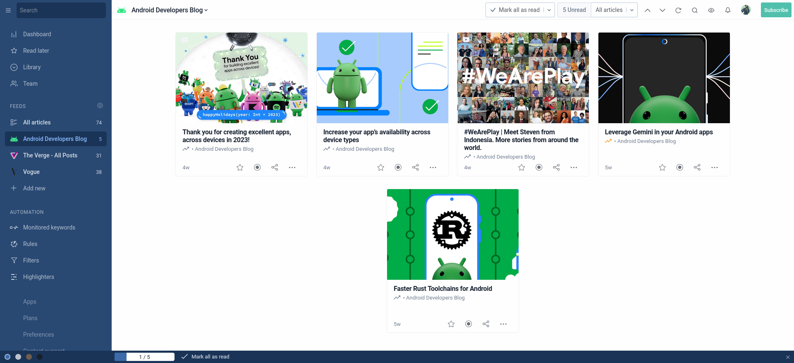

Mis recomendaciones:
Atareao con linux
Atareao con linux es un podcast / newsletter que trata sobre las aventuras y desventuras de Lorenzo Carbonell con Linux y software libre en general.
Ir a la web
Hackaday
Contiene trucos y tips sobre la informática además de noticias. (Aviso: La gente aquí está loca)
Ir a la web
Tierra de Hackers
Es un noticiero de ciberseguridad en formato podcast en el que Martín Vigo y Alexis Porros documentan los descubrimientos y noticias de la semana en el campo de la ciberseguridad.
Ir a la web

Feeds interesantes:
Me he apuntado a los siguentes feeds usando Inoreader:
- Vogue

- The Vergue

- Android Developers Blog

¿Te gusta la informática?
¡Te encantaŕa mi blog!
¡Hola! Soy un estudiante de informática a quien le fascina el mundo de la informática y sus ramas (concretamente ciberseguridad).
Tengo un blog donde escribo sobre proyectos personales y cosas que me llamen la atención sobre la informática.
Si te interesa, podrías pasarte por ahí :)
 Visitar
Visitar